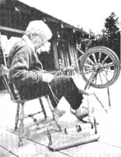
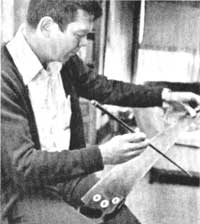

In celebration of little-known MOTHER-type folks from all over.
PHOTO BY PETER WHITTLESEY
ELIZABETH GRAHAM: FROM BLEAT TO PLEAT
Elizabeth Graham's instant reaction to the sight of spinners at work, during her first trip to Scotland's Hebrides Islands, was a determination to learn the graceful craft herself. So she diligently set to work and practiced teasing raw fleece, carding it, forming it into rolags (thin rolls) for spinning, and plying the spun wool into skeins. Then, when she'd mastered the skill, Ms. Graham went on to learn the secrets of dyeing and weaving, as well.
And (perhaps remembering the place where she'd originally been exposed to the art of working with wool) Betty eventually developed a special interest in the precise designs of Scottish tartans. Experience soon taught her to maintain an exact thread count of each color throughout the tartan-making process, in order to produce an authentic pattern.
Then, in 1977, when Ms. Graham was 72, she traveled to Comrie, Scotland to demonstrate her craft to summer visitors at the Museum of Scottish Tartans. One of her greatest accomplishments during that sojourn was the recreation of the great-granddaddy of all tartans, the Falkirk . . . which Betty wove with fleece obtained from local sheep. (The sole surviving piece of original Falkirk fabric-which was found stuffed in a jar of Roman coins dated 250 A.D.-is about the size of a quarter.)
Ms. Graham and her late husband chose to spend their retirement years in the hills of northern California because it reminded them of the Scottish countryside they'd both come to love. Now, high above the blue Pacific, Betty helps prove, with her handicraft, that the simple arts are not forgotten.- Jan Mitchell.
DAN WALLACE: SAWS THAT SING
Delavan, Wisconsin is the home of what is believed to be the world's only musical saw business . . . the esteemed Mussehl & Westphal Company, which Dan Wallace assumed ownership of about four years ago. An airline pilot by trade, Wallace had started a sideline saw-sharpening enterprise in the early 1970's, and-in the course of that work-he came across a Mussehl & Westphal advertisement. "I recalled that my grandfather had once owned a musical saw," says Dan, "and since I thought it would be just the thing for someone with a business like mine, I sent off for one."
When Wallace received his instrument in the mail, he recognized it as the same make of tool as his grandfather had bought back in 1922. Intrigued, Dan got in touch with the firm's founder, Clarence Mussehl, and the two struck up an immediate friendship. Clarence, who was in his 80's at the time, confided in Dan that he didn't want the business to fold when he could no longer run it ... so, shortly before Mussehl's death in 1978, Wallace purchased the company (for information on the firm's products and prices write Mussehl & Westphal, Dept. TMEN, 130 South 4th Street, Delavan, Wisconsin 53115).
PHOTO BY THE DELAVAN ENTERPRISE
Dan's job as a pilot has enabled him to visit "sawyers" all over the country, to attend the annual Musical Saw Festival in Santa Cruz, California, and to play the instrument at various functions. [EDITOR'S NOTE: Those interested in saw playing should read MO THER NO. 61's Homegrown Music column, which was dedicated to the subject.] Back home in Delavan, though, Wallace is content to market his melody-makers at a slow but steady pace. "My primary purpose here," says Dan, "is to keep the musical saw business alive ... in memory of Clarence Mussehl."- Clarice L.Moon DR. J.P. CLEARY MIDDLE SCHOOL: ALTERNATIVE ENERGY EDUCATION
When Ken Riggione and his aide, Sue Fenili, began teaching their "special needs" (emotionally disturbed) students about renewable and nonrenewable sources of energy, the pair decided that a hands-on science project was in order. So Ken, Sue, and their class of eight boys-aged 12 to 14-set out to build a solar panel and install it on the roof of the Dr. J.P. Cleary Middle School in Minotola, New Jersey.
Interested members of the community donated plans and materials . . . and the youngsters collected, washed, and sorted hundreds of aluminum cans. Then, with the help of nine of their school's vocational students, the boys worked an hour and a half every day from March 20 to May 19, 1981 ... until they'd completed the structure. The result was a mass of aluminum can halves, painted black to increase heat absorption and nailed together inside an insulated, glass-covered frame. When the temperature in the solar heater reaches 120°F, a thermostat activates a fan . . . sending warm air through two 25-foot insulated ducts that stretch from the solar chamber to the pupils' classroom window.
And what's in the future for these budding solar builders? Well, the boys have already suggested that they construct a collector which would store energy, for use when needed ... as well as a greenhouse to be warmed with the heat produced by their completed unit!- Donna Freedman.
IN BRIEF. . .
THELMA DALMAN, food service director for the Santa Cruz, California city schools, has been campaigning for improvements in her district's lunch program menu for the past decade. After eliminating all artificial colors and flavors from student meals, Dalman installed a whole-grain bakery in the central kitchen, reduced the amount of sugar used in lunch recipes, and introduced a salad bar. Thelma recently scored yet another victory in her efforts to improve the nutritional value of the food served in the Santa Cruz schools, when the USDA granted her permission to use tofu as a partial meat substitute in federally subsidized lunches!
Ten years ago MICHAEL AMES established Trade AmericanCard, an enterprise which has grown into a network of some 2,000 business and professional individuals who accept barter exchanges. Participants purchase goods and services by charging them on their TAC credit cards, and all such transactions are logged into a computer. Credits can be spent and debits can be paid through barter with any TAC member. Ames's company makes its own profit by imposing an 8% surcharge on all purchases . . . while a $150 initial membership fee pays the firm's three salespeople who bring new businesses into the system. Folks interested in joining the organization-or in being trained to set up similar clubs of their own-should write Trade AmericanCard, Dept. TMEN, 777 South Main, Suite 204, Orange, California 92668.- JV.
|
 |
 |
|